УДК 614.876:666.1 · VibeEngineering · радиационная дозиметрия · Geant4 Монте-Карло · 23.07.2026 · ред. 5
Расчёт мощности эквивалентной дозы в коже методом Монте-Карло (Geant4) при контакте с чешским урановым бисером «жёлтый опал 6/0». Измеренные удельные активности ²³⁸U 2,27·10⁵ Бк/кг, ²³⁵U 9,9·10³ Бк/кг; уран очищенный — вековое равновесие ряда нарушено, гамма-активные дочерние продукты радиевого звена отсутствуют. Три конфигурации укладки, сферическая геометрия бусины. Мощность эквивалентной дозы внешнего облучения кожи Ḣp(0,07) на контакте — от 6,7 ± 0,7 (одна бусина) до 48 ± 5 мкЗв/ч (плотный коврик), практически целиком за счёт бета-излучения.
К статье прилагается интерактивный калькулятор с трёхмерной визуализацией: произвольная геометрия раскладки, содержание урана в стекле и размер бусин; модель откалибрована по опорным точкам настоящего расчёта (среднеквадратичное отклонение 0,7 %).
Расчёт выполнен ИИ-агентом (Anthropic Claude) под руководством и контролем оператора; результаты прошли независимый аудит кода. Подробнее — §11 «Заявление об использовании ИИ».
Образец. Чешский урановый стеклянный бисер «Бисер жёлтый опал, урановое стекло 6/0, 4,1 мм» (арт. 31119001/0 8200). Масса бусины 63,96 мг (14,710 г / 230 шт). Измерены удельные активности: 238U 2,27·105 Бк/кг (18,37 г/кг), 235U 9,90·103 Бк/кг (0,1237 г/кг); обогащение по 235U 0,67 % — практически природное. В стекле — флюоресценция церия (обесцвечиватель CeO2), барий отсутствует.
Источник. Уран в стекле химически очищенный, содержание радия минимально: вековое равновесие ряда 238U нарушено на 226Ra, поэтому гамма-активные продукты радиевого звена (214Pb, 214Bi) в стекле отсутствуют. Эквивалентную дозу в коже формируют короткоживущие дочерние нуклиды первых звеньев цепочек распада, восстановившие вековое равновесие с ураном за месяцы после варки, — прежде всего высокоэнергетическая β-частица 234mPa (Emax 2,27 МэВ).
Метод. Geant4 11.2.1[9], электромагнитная физика G4EmStandardPhysics_option4 и модуль радиоактивного распада G4RadioactiveDecay[11]; источник распределён по объёму стекла (учтено самопоглощение бета-частиц), сферическая бусина в контакте с фантомом «кожа + прилегающие ткани» (слоистая мягкая ткань ICRU[8]). Целевая величина — мощность эквивалентной дозы внешнего облучения кожи Ḣp(0,07) (мощность персонального эквивалента дозы на глубине 0,07 мм ≡ 7 мг/см², т.е. базального слоя эпидермиса), усреднённая по площади 1 см² по определению ICRP/ICRU[6]; в расчёте она берётся как среднее по глубине 50–100 мкм. Нормировка проверена санити-тестом (отношение к аналитическому закону обратных квадратов 1,000).
Результат. Мощность эквивалентной дозы внешнего облучения кожи Ḣp(0,07) (базальный слой, контакт вплотную): одна бусина 6,7 ± 0,7 мкЗв/ч, цепочка 18 ± 2 мкЗв/ч, плотный коврик 48 ± 5 мкЗв/ч (статистическая погрешность < 1 %; приведённая погрешность ± отражает неопределённость плотности стекла ±10 %). Форма бусины даёт дополнительную одностороннюю систематику вверх: сферическая модель — консервативная нижняя оценка, истинное значение для одиночной бусины до ~+34 % (полный бюджет в §4). Вклад фотонов < 0,2 %; из энергии бета-частиц 55–67 % поглощается в самом стекле. При обычном обращении доза остаётся в пределах норматива для населения (предел эквивалентной дозы в коже — 50 мЗв/год[7]); заметная доза набирается лишь при многочасовом ежедневном контакте вплотную.
Ключевые слова: урановое стекло; природные радионуклиды (NORM); очищенный уран; нарушение векового равновесия; 234mPa; доза в коже; бета-дозиметрия; эффект «горячей частицы»; Монте-Карло; Geant4; потребительские изделия с радиоактивностью.
Урановое стекло — силикатное стекло, окрашенное соединениями урана (обычно 0,1–2 масс.% U, исторически до десятков процентов); ему свойственны жёлто-зелёная окраска и яркая зелёная флюоресценция[1]. В исследуемом бисере измеренная массовая доля урана составляет 1,85 % (18,37 г 238U + 0,124 г 235U на кг стекла). Наблюдаемая флюоресценция церия и отсутствие бария указывают на введение в стекломассу оксида церия CeO2 — распространённого обесцвечивателя стекла: церий действует не как краситель, а как окислитель, переводящий примесное железо Fe2+ (сильный сине-зелёный краситель) в Fe3+ (слабый жёлтый) и тем снимая нежелательный оттенок[2]. Типичные вводимые доли CeO2 — 0,025–0,2 масс.%[2б]; в расчёте принято ~0,5 % (верхняя оценка, на перенос β/γ не влияет, §3).
Цель работы — оценить мощность эквивалентной дозы и дозу в коже от бета- и гамма-излучения при непосредственном контакте бисера с кожей, для трёх сценариев обращения: (а) одна бусина, (б) цепочка бусин (нить, браслет), (в) плотная однорядная укладка — «коврик» (вышивка, плотное низание бисером). Доза нормируется на базальный слой эпидермиса (глубина 50–100 мкм, ≈ 5–10 мг/см²), усреднённой по площади 1 см² — стандартное определение эквивалентной дозы в коже[6][7].
По данным о происхождении стекла уран в нём химически очищенный (обеднённый либо природный, с минимальным содержанием радия). Химическая очистка урана отделяет продукты его распада, вследствие чего вековое равновесие ряда 238U оказывается нарушенным на 226Ra. За время жизни изделия (десятилетия) 226Ra из 230Th практически не восстанавливается: период полураспада 230Th — 75 584 года[3]. Поэтому радий и последующие члены ряда отсутствуют — а именно 214Pb и 214Bi, дающие в радийсодержащем материале проникающие гамма-линии 352 / 609 / 1120 / 1764 кэВ[4].
Присутствуют и излучают только короткоживущие дочерние нуклиды первых звеньев цепочек распада 238U и 235U, восстановившие вековое равновесие с материнским ураном за месяцы после варки стекла:
| Нуклид | Уд. активность, Бк/кг | На 1 бусину, Бк | Излучение, значимое для кожи |
|---|---|---|---|
| Цепочка A = 234 (из 238U) | |||
| 234Th | 2,27·10⁵ | 14,52 | β, Emax ~199 кэВ + γ 63/93 кэВ |
| 234mPa | 2,27·10⁵ | 14,52 | β, Emax 2,27 МэВ (доминирующий вклад) |
| Цепочка A = 235 (из 235U) | |||
| 235U | 9,90·10³ | 0,633 | γ 143/163/185/205 кэВ + α |
| 231Th | 9,90·10³ | 0,633 | β Emax ~389 кэВ + γ 25–84 кэВ |
| Не дают дозы в коже | |||
| 238U, 234U | 2,27·10⁵ | — | α (тормозится в стекле; пробег в ткани < мёртвого слоя) |
| ≈ 0 | — | ||
Расчёт выполнен методом Монте-Карло — прямым статистическим моделированием судьбы каждой отдельной частицы: розыгрышем места рождения, энергии, направления и всех последующих взаимодействий с веществом вплоть до полного поглощения. Использована библиотека переноса частиц Geant4 (GEometry ANd Tracking, разработка ЦЕРН, стандартный инструмент дозиметрии и медицинской физики), версия 11.2.1[9][10]. Физический список — набор моделей взаимодействий, подключаемых к транспорту; от него зависит точность:
Первичной частицей каждой истории служит материнский ион (например, 234Th) с нулевой кинетической энергией, помещённый в случайную точку объёма стекла; распад разыгрывается немедленно. Поскольку β-распад сохраняет массовое число A, изобарная подцепочка A = 234 (234Th → 234mPa → 234U) в вековом равновесии моделируется как единое целое: один запуск с активностью 234Th воспроизводит совокупное излучение 234Th и 234mPa (их активности равны). Альфа-распад меняет A, поэтому дальше цепочка не идёт и радиевый ряд не восстанавливается. Цепочка A = 235 (235U → 231Th) моделируется аналогично. Итоговая доза — сумма вкладов двух непересекающихся цепочек, что исключает двойной учёт (см. §11 — независимый аудит кода).
Свёртка активностями. Каждый расчёт даёт отклик — поглощённую энергию в ткани на один распад. Мощность дозы получается умножением отклика на измеренную активность и суммированием по цепочкам: Ḋ = Σ Ai·Ri. Разделение «транспорт ↔ активности» позволяет пересчитывать дозу при уточнении активностей без повторного моделирования.
Стекло — натрий-кальциевое силикатное (сода-известь) с добавкой U 1,84 масс.% и Ce ~0,5 % (CeO2; точное содержание неизвестно, влияние на перенос β/γ при этой доле пренебрежимо), плотность 2,5 г/см³[1]. Бусина 6/0 (рокайль) моделируется как сфера Ø4,1 мм с осевым цилиндрическим отверстием (радиус 0,93 мм подобран под измеренную массу 63,96 мг); сфера касается кожи в одной точке. Источник распределён по объёму стекла, чем учитывается самопоглощение бета-частиц: часть эмитированных бета-частиц поглощается в самом стекле, не достигая кожи. По расчёту в стекле поглощается 55 % энергии бета-частиц для одиночной бусины и до 67 % в плотной укладке. Цепочка — 11 сфер в линейный ряд с шагом 4,1 мм (касание по внешнему диаметру), ось ряда параллельна поверхности кожи; скоринг под центральной бусиной. Коврик — квадратная решётка бусин с тем же шагом.
Фантом «кожа + прилегающие ткани». Для бета- и мягкого гамма-излучения от контактного источника адекватен не полноростовой воксельный фантом (бета-частицы уходят в ткань ≤ 1 см и не «видят» остального тела; воксельная модель не разрешает слой 70 мкм), а слоистая тканевая пластина: мягкая ткань ICRU[8] толщиной 2 см. Верхние 0,5 мм разрешены мелким шагом (15 мкм) и низким порогом рождения вторичных частиц (5 мкм). Поглощённая энергия набирается по слоям глубины и по радиусу в диске площадью 1 см²; раздельно учитываются электроны (β-частицы, электроны внутренней конверсии и Оже), фотоны распада (γ- и характеристическое рентгеновское излучение) и тормозное излучение.
Статистика — 2·10⁶ распадов на цепочку A = 234 и 1·10⁶ на A = 235. Статистическая погрешность (1σ) мощности дозы в базальном слое — 0,3 % (одна бусина), 0,6 % (цепочка), 1,0 % (коврик), существенно меньше систематических допущений (§10). Вклад тормозного излучения в дозу кожи пренебрежимо мал (< 0,1 %). Обоснование достоверности расчёта — §8.
Мощность эквивалентной дозы внешнего облучения кожи Ḣp(0,07) (мкГр/ч = мкЗв/ч, взвешивающий коэффициент wR = 1 для β и γ), контакт вплотную, усреднение по площади 1 см²:
| Слой кожи | 1 бус. β | 1 бус. γ | 1 бус. Σ | Коврик β | Коврик γ | Коврик Σ |
|---|---|---|---|---|---|---|
| поверхность 0–5 мкм | 7,42 | 0,012 | 7,43 | 57,4 | 0,15 | 57,6 |
| базальный (50–100 мкм) | 6,68 | 0,007 | 6,69 | 48,3 | 0,10 | 48,4 |
| дерма 0,3–0,5 мм | 4,82 | 0,007 | 4,82 | 35,2 | 0,09 | 35,3 |
| ткань 2–3 мм | 0,96 | 0,003 | 0,97 | 7,43 | 0,05 | 7,49 |
| Конфигурация | Ḣp(0,07) (сфера), мкЗв/ч | стат. (1σ) | расчётный диапазон | доля электронов |
|---|---|---|---|---|
| одна бусина | 6,69 | ±0,3 % | 6,0–9,0 | 99,9 % |
| цепочка (11 бусин) | 18,3 | ±0,6 % | 16–23 | 99,9 % |
| коврик плотной вязки (9×9) | 48,4 | ±1,0 % | 44–53 | 99,8 % |
Статистическая погрешность метода Монте-Карло мала (< 1 %); итоговую неопределённость расчёта определяют систематические допущения, прежде всего форма бусины. Сферическая модель даёт нижнюю оценку кожной дозы (компактная геометрия, точечный контакт, максимальное самопоглощение); цилиндрическая — верхнюю; истинное значение для реального рокайля (скруглённый бочонок) лежит между ними.
| Источник | Тип | Одна бусина | Коврик |
|---|---|---|---|
| статистика Монте-Карло | случайная | ±0,3 % | ±1,0 % |
| форма бусины (сфера ↔ цилиндр) | систематическая | +34 % | < 1 % |
| плотность стекла (2,0–3,4 г/см³) | систематическая | ±10 % | ±10 % |
| содержание церия | систематическая | < 1 % | < 1 % |
| суммарная (расчётная) | +35 % / −10 % | ±10 % |
Кроме перечисленного, результат линейно пропорционален измеренной удельной активности источника: её погрешность (входная измеренная величина) переносится в дозу множителем 1:1 и в расчётный бюджет не включена — при уточнении активностей дозу достаточно домножить на соответствующий коэффициент.
Насыщение поля с ростом укладки: мощность дозы в центре растёт лишь пока добавляются бусины в пределах поперечного разлёта бета-частиц (~1 см). Относительно одиночной бусины: цепочка ×2,7; коврик 5×5 ×7,2, 7×7 ×7,3, 9×9 ×7,2 — дальнейшее расширение укладки мощность дозы не увеличивает (насыщение достигается уже при размере ~5×5). Мощность эквивалентной дозы в коже практически целиком обусловлена электронной компонентой (> 99,8 %); вклад фотонов не превышает 0,2 %, однако фотоны проникают в ткань существенно глубже бета-частиц (Рис. 1).
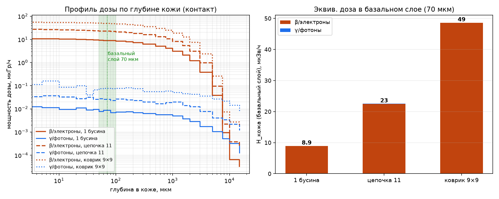
Трёхмерное распределение поглощённой дозы (в тканеэквивалентной среде) вокруг источника для трёх конфигураций. С ростом укладки локальное поле отдельной бусины переходит в квазиоднородный приповерхностный слой облучения; фотонная компонента во всех случаях распределена шире электронной и на порядки слабее.
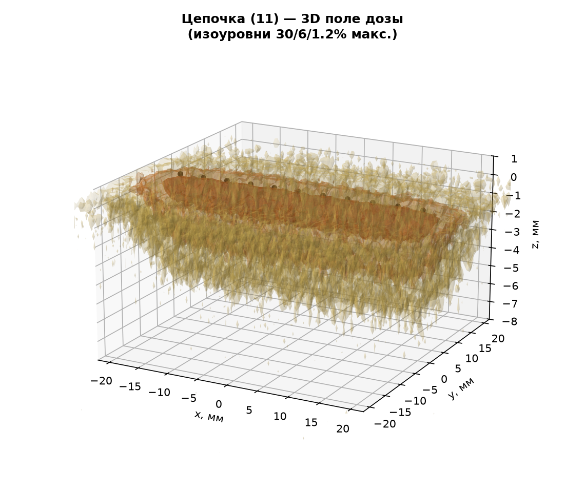
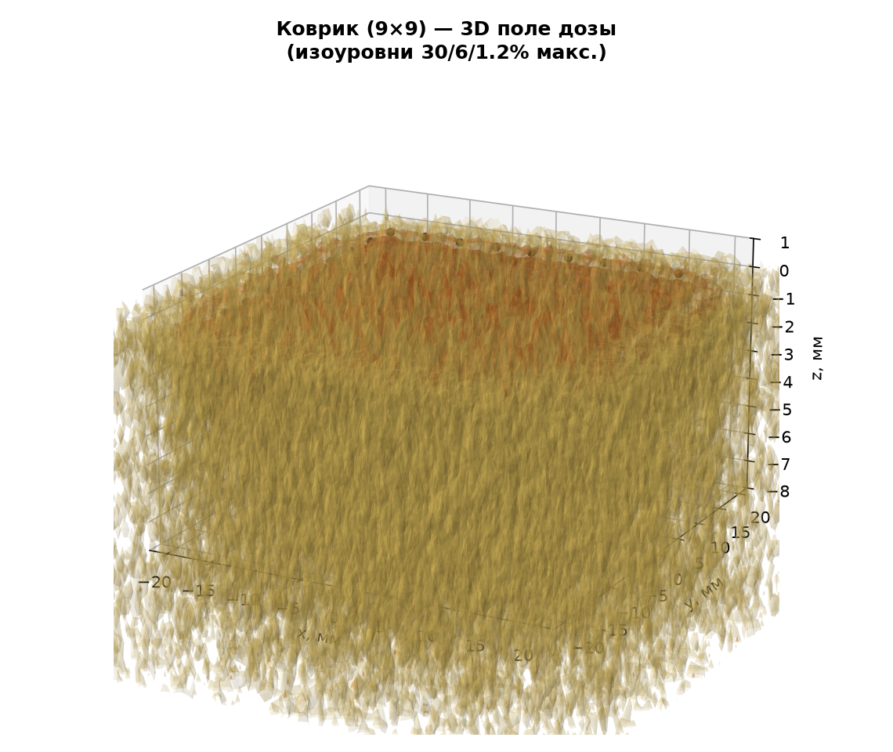
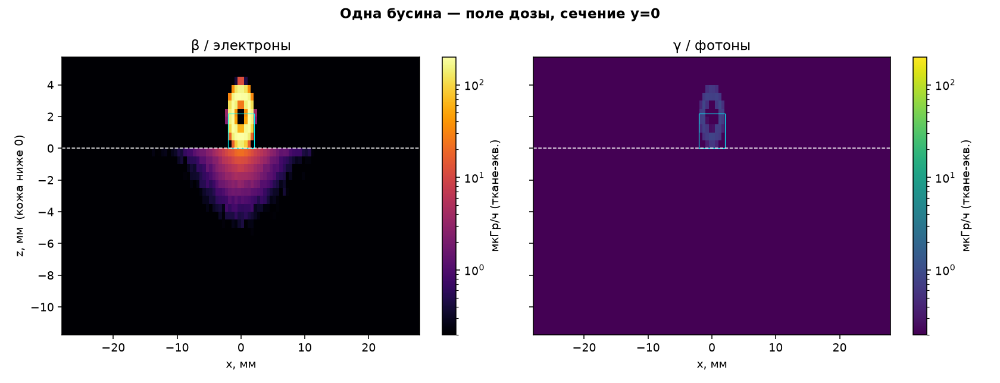
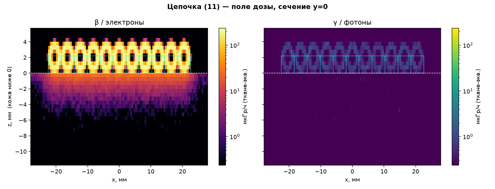
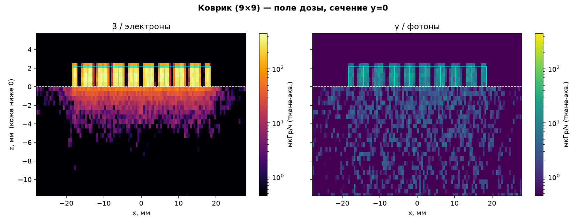
Сфера касается кожи практически в точке, поэтому естественен вопрос о возможном превышении нормы в микроскопическом пятне контакта. Однако норматив кожной дозы[6][7] определён именно как доза, усреднённая по площади 1 см² — намеренно, поскольку он защищает от детерминированных эффектов кожи (эритема, некроз), возникающих лишь при облучении конечного объёма ткани; тот же подход к усреднению принят для дискретных радиоактивных частиц (NCRP-130, ICRP). Отдельного, более строгого «локального» предела для точечного контакта нормы не вводят.
Количественно: доза в базальном слое, усреднённая по диску всё меньшей площади под точкой контакта, растёт от нормативного значения 6,7 мкЗв/ч (1 см²) до 27 мкЗв/ч на площади 0,01 см² (Рис. 4). Отношение пика к среднему по 1 см² — ×4,1. Даже это пиковое локальное значение (десятки мкЗв/ч) на порядки ниже уровней, при которых возникают детерминированные эффекты кожи: порог эритемы (~3 Гр) при 27 мкГр/ч был бы достигнут лишь за ~10⁵ часов непрерывного контакта. Таким образом, локальная неоднородность поля не приводит к превышению норматива.
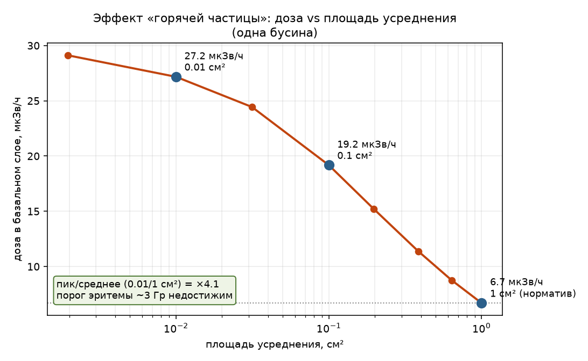
Чтобы независимо от Geant4 проверить и порядок, и абсолютное значение дозы, выполнена классическая (полуаналитическая) оценка по принципу «от простого к точному»: сначала — замкнутая формула для коврика, которую читатель воспроизведёт вручную (§7.1), затем — объёмный интеграл по сфере с двумя вариантами дозового ядра (§7.2).
Плотный коврик латерально много больше пробега бета-частиц (экстраполированный пробег β 234mPa Emax = 2,27 МэВ в ткани ≈ 1,1 г/см² ≈ 11 мм; коврик 9×9 ≈ 37 мм), поэтому его правомерно приблизить бесконечной однородной β-активной плоскостью стекла. Мощность дозы у поверхности полубесконечного однородного источника равна половине равновесной мощности в бесконечной среде[17] (энергия делится поровну «вверх/вниз»), ослабленной до глубины базального слоя:
Ḋp(0,07) = ½ · Σi Cv,i · Ēi · e−νiσ · k
Пример для доминирующего 234mPa (проверяется калькулятором в четыре строки):
| Нуклид | Cv, Бк/кг | Ē, МэВ | Emax, МэВ | ν, см²/г | νσ | e−νσ | Ḋ∞, мкГр/ч | ½·Ḋ∞·e−νσ |
|---|---|---|---|---|---|---|---|---|
| 234mPa | 2,27·10⁵ | 0,819 | 2,27 | 5,19 | 0,037 | 0,963 | 107,2 | 51,7 |
| 234Th | 2,27·10⁵ | 0,060 | 0,199 | 202,8 | 1,462 | 0,232 | 7,86 | 0,91 |
| 231Th | 9,90·10³ | 0,163 | 0,389 | 68,7 | 0,496 | 0,609 | 0,93 | 0,28 |
| Сумма (ручная оценка коврика) | 52,8 | |||||||
Неопределённость. Результат доминируется 234mPa (множитель e−νσ ≈ 0,96 почти не влияет). Определяющие вклады — удельная активность (HPGe, u ≈ 10 %) и средняя энергия β-спектра (u ≈ 10 %): uотн = √(0,10² + 0,10²) ≈ 14 %. Итог: Ḋp(0,07) ≈ 53 ± 7 мкГр/ч.
Одиночная бусина мала в сравнении с пробегом β, поэтому полубесконечное приближение к ней неприменимо. Для неё (и промежуточных укладок) взято бета-точечное дозовое ядро, проинтегрированное по объёму стекла сферы с учётом самопоглощения; цепочка и коврик получены суперпозицией сфер на решётке:
Ḋ(r) = a·Ē·ν / (4π I) · Φ(ν·m) / r², I = ∫₀∞ Φ(u) du
где m — масса вдоль луча (стекло + ткань), r — расстояние; a·Ē — полная излучаемая мощность, 1/(4πr²) — геометрическое расхождение изотропного точечного источника, Φ(ν·m) — безразмерная радиальная функция спада дозы (дозовое ядро)[16][18], а нормировочный множитель ν/(4πI) с I = ∫₀∞Φ(u)du фиксируется условием сохранения энергии (∫ Ḋ·ρ·4πr²dr = a·Ē). Доза считается только в точках-мишенях на коже (диск 1 см² на глубине базального слоя) и суммируется по всем точкам-источникам в стекле: множитель 1/(4πr²) задаёт долю изотропной эмиссии каждой точки, попадающую на кожу в пределах её телесного угла, а Φ(ν·m) ослабляет её на длине стекла именно по лучу к коже. То есть учитывается не «вся эмиссия из сферы», а лишь достигающая кожи (электроны, ушедшие вверх/вбок, мишени на коже не имеют). Рассмотрены два ядра Φ:
| Конфигурация | Монте-Карло | эксп. ядро | ядро Лёвинджера |
|---|---|---|---|
| одна бусина | 6,69 | 6,39 (×0,96) | 5,83 (×0,87) |
| цепочка (11) | 18,3 | 21,9 (×1,19) | 19,9 (×1,09) |
| коврик (9×9) | 48,4 | 74,6 (×1,54) | 68,5 (×1,41) |
Для одиночной бусины экспоненциальное ядро совпадает с Монте-Карло на 4 % (6,39 против 6,69 мкЗв/ч) — базовый источник воспроизведён полностью независимым методом. Систематические отклонения на укладках разобраны в §8.
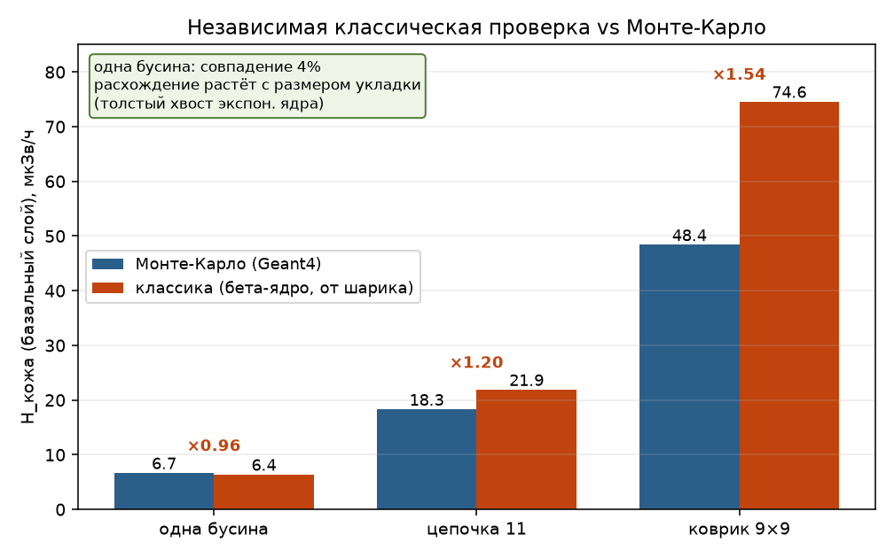
Результату можно доверять, поскольку он подтверждается несколькими независимыми линиями; ниже — их сводка, затем разбор единственного систематического расхождения.
| Что проверяем (метод и источник) | Результат сверки |
|---|---|
| Проверка нормировки (санити-тест): расчётный флюенс точечного изотропного γ-источника в вакууме сверяется с точным законом обратных квадратов Φ = N/(4πr²) на 10/20/30 см | отношение расчёт/аналитика = 1,000 — геометрия, розыгрыш первичных частиц и нормировка скоринга воспроизводят точное решение |
| Самосогласованность входных данных из первых принципов: измеренная удельная активность ↔ массовая доля урана (через удельную активность чистого 238U, λN) | 2,27·10⁵ Бк/кг → 1,83 масс.% U, совпадает с независимо измеренными 1,84 %; 235U 0,67 % |
| Независимая аналитическая формула для плотной укладки (§7.1; полубесконечный источник, Лёвинджер/Cember[16][17]) | 53 ± 7 мкГр/ч против МК 48,4 → +9 % |
| Независимый интеграл дозового ядра по сфере для одиночной бусины (§7.2; ядро Лёвинджера[16][18]) | 6,39 против МК 6,69 мкЗв/ч → 4 % |
| Независимый аудит кода отдельным ИИ-агентом (§11): пересчёт доз из сырых прогонов + трек-дамп цепочек распада Geant4 | дозы воспроизведены; выявлена и устранена ошибка нормировки первой редакции |
Единственное систематическое расхождение — рост отношения «интеграл по сфере / МК» с размером укладки: экспоненциальное ядро ×0,96 → ×1,19 → ×1,54, ядро Лёвинджера ×0,87 → ×1,09 → ×1,41. Это не случайный разброс, а эффект с ясной физической причиной:
beads_skin) позволяет перепроверить каждый шаг. Тем не менее приведённые величины остаются модельной оценкой: методические ошибки и погрешности исходных данных не исключены, поэтому перед практическим применением необходима независимая проверка квалифицированными специалистами и, при необходимости, прямое измерение аттестованными приборами (см. уведомление в начале).Соответствующий норматив — предел эквивалентной дозы в коже по НРБ-99/2009[7]; он определён именно как доза, усреднённая по площади 1 см² на глубине базального слоя, — то есть та величина Ḣp(0,07), что рассчитана здесь. Общий предел эффективной дозы (1 мЗв/год для населения) к локальному облучению кожи напрямую не применяется.
| Сценарий | Ḣp(0,07), мкЗв/ч | Часов до 50 мЗв/год | Эквивалент |
|---|---|---|---|
| одна бусина | 6,7 | ≈ 7500 | ~20 ч каждый день весь год |
| цепочка (11) | 18,3 | ≈ 2700 | ~7,5 ч каждый день весь год |
| коврик плотной вязки | 48,4 | ≈ 1030 | ~2,8 ч каждый день весь год |
Пределы эквивалентной дозы в коже: население 50 мЗв/год, персонал группы А 500 мЗв/год. Реалистичные режимы обращения:
| Режим | Доза в коже за год | Доля от 50 мЗв |
|---|---|---|
| украшение (плотный коврик у кожи) 2 ч/сут | ≈ 35 мЗв | 71 % — ниже предела |
| украшение (коврик) 1 ч/сут | ≈ 18 мЗв | 35 % |
| ношение цепочки 24 ч/сут | ≈ 160 мЗв | 320 % — выше населения, ниже персонала А |
| ношение коврика 24 ч/сут | ≈ 424 мЗв | 848 % — выше населения, ниже персонала А (500) |
| одиночная бусина, эпизодический контакт | ≪ 1 мЗв | ничтожно |
| пересыпание/сортировка (минуты) | ≪ 0,01 мЗв | ничтожно |
Работа выполнена в связке «оператор + ИИ-агент» (интерфейс Claude Code, Anthropic). Роли распределены так:
Все приведённые величины воспроизводимы приложенным кодом (проект beads_skin).
Код и данные расчёта: проект Geant4 beads_skin (main.cc, свёртка postproc_beads.py, рендеры field_render.py, fig_hotparticle.py). Все графические материалы — в каталоге figures/ этой страницы.
Для полевого контроля удобно связать показание плотности потока β-частиц φβ (измеряется приборами контроля плотности потока β-частиц, например блоком детектирования БДПБ или дозиметром-радиометром МКС-01СА) с мощностью эквивалентной дозы в коже. Для геометрии «плотная укладка»:
Ḣp(0,07) = K · φβ
Плотность потока — прямой расчёт Монте-Карло. В той же модели Geant4 (§3) для коврика 9×9 подсчитаны β-частицы, пересекающие границу кожи (диск 1 см²), со свёрткой по измеренным активностям (как для дозы). Учтён порог регистрации 156 кэВ (мягкие β отсекаются прибором):
| Величина | β·см⁻²·с⁻¹ | β·см⁻²·мин⁻¹ |
|---|---|---|
| все β | 17,9 | 1070 |
| β > 156 кэВ (порог БДПБ) | 16,4 | 983 |
Коэффициент. При Ḣp(0,07) плотной укладки = 48,4 мкЗв/ч (Монте-Карло, §4) и φβ(>156 кэВ) = 16,4 β·см⁻²·с⁻¹:
K ≈ 3,0 (мкЗв/ч)/(β·см⁻²·с⁻¹) или K ≈ 0,05 (мкЗв/ч)/(β·см⁻²·мин⁻¹)
Ориентир: 1000 β·см⁻²·мин⁻¹ ≈ 50 мкЗв/ч. Неопределённость ~30 % (плотность стекла ±10 %, статистика МК, геометрия измерения и обратное рассеяние). Примечание. Простая аналитическая оценка «чистого тока» J = Cm·nβ/(6ν) = 7,5 β·см⁻²·с⁻¹ даёт вдвое меньше: детектор считает все пересечения (≈ 2× тока при широком угловом распределении) плюс конверсионные электроны — поэтому используется прямой транспорт, согласованный с измерением.
handcalc_flux.py проекта beads_skin.Расчёт выполнен ИИ-агентом (Anthropic Claude) под руководством и контролем оператора. Метод — прямое Монте-Карло моделирование переноса излучения (Geant4 11.2.1) со свёрткой измеренными активностями. Величины даны для консервативной геометрии контакта вплотную.
VibeEngineering · 23.07.2026 · дозиметрия уранового бисера · ред. 5 (структура проблема→решение→проверка→анализ; величина Ḣp(0,07); ручной классический расчёт; оформление по ГОСТ 8.417 — десятичная запятая, УДК)
UDC 614.876:666.1 · VibeEngineering · radiation dosimetry · Geant4 Monte Carlo · 23 Jul 2026 · rev. 5
Monte Carlo (Geant4) calculation of the skin dose rate from contact with Czech uranium glass beads ("yellow opal, size 6/0"). Measured specific activities ²³⁸U 2.27·10⁵ Bq/kg, ²³⁵U 9.9·10³ Bq/kg; the uranium is purified — the series secular equilibrium is broken, and the gamma-active daughters of the radium branch are absent. Three packing configurations, spherical bead geometry. The personal skin dose-equivalent rate Ḣp(0.07) on contact ranges from 6.7 ± 0.7 (single bead) to 48 ± 5 µSv/h (dense mat), almost entirely from beta radiation.
An interactive calculator with 3D visualisation accompanies this paper: arbitrary packing geometry, uranium content of the glass and bead size; the model is calibrated against the reference points of this calculation (r.m.s. deviation 0.7 %). The calculator interface is in Russian.
The calculation was performed by an AI agent (Anthropic Claude) under the guidance and control of the operator; the results passed an independent code audit. See §11 "Statement on the use of AI".
Sample. Czech uranium glass beads "yellow opal, uranium glass 6/0, 4.1 mm" (art. 31119001/0 8200). Bead mass 63.96 mg (14.710 g / 230 pcs). Measured specific activities: 238U 2.27·105 Bq/kg (18.37 g/kg), 235U 9.90·103 Bq/kg (0.1237 g/kg); 235U enrichment 0.67 % — essentially natural. The glass shows cerium fluorescence (CeO2 decolorizer); barium is absent.
Source. The uranium is chemically purified, with minimal radium content: the secular equilibrium of the 238U series is broken at 226Ra, so the gamma-active daughters of the radium branch (214Pb, 214Bi) are absent from the glass. The equivalent skin dose is produced by the short-lived daughters of the first links of the decay chains, which re-established secular equilibrium with the uranium within months after melting — above all the high-energy beta particle of 234mPa (Emax 2.27 MeV).
Method. Geant4 11.2.1[9], electromagnetic physics G4EmStandardPhysics_option4 and the radioactive-decay module G4RadioactiveDecay[11]; the source is distributed over the glass volume (beta self-absorption is included), the spherical bead is in contact with a "skin + adjacent tissue" phantom (layered ICRU soft tissue[8]). The target quantity is the directional/personal skin dose-equivalent rate Ḣp(0.07) (rate of the personal dose equivalent at 0.07 mm depth ≡ 7 mg/cm², i.e. the epidermal basal layer), averaged over a 1 cm² area per the ICRP/ICRU definition[6]; in the calculation it is taken as the average over the 50–100 µm depth. The normalization was verified with a sanity test (ratio to the analytical inverse-square law = 1.000).
Result. Personal skin dose-equivalent rate Ḣp(0.07) (basal layer, direct contact): single bead 6.7 ± 0.7 µSv/h, chain 18 ± 2 µSv/h, dense mat 48 ± 5 µSv/h (statistical uncertainty < 1 %; the quoted ± uncertainty reflects the ±10 % glass-density uncertainty). The bead shape adds a one-sided upward systematic: the spherical model is a conservative lower estimate, the true value for a single bead up to ~+34 % (full budget in §4). The photon contribution is < 0.2 %; of the emitted beta energy, 55–67 % is absorbed within the glass itself. Under normal handling the dose stays within the limit for the public (skin equivalent-dose limit 50 mSv/year[7]); an appreciable dose accumulates only under many hours of daily direct contact.
Uranium glass is a silicate glass coloured with uranium compounds (typically 0.1–2 wt% U, historically up to tens of percent); it shows a yellow-green colour and bright green fluorescence[1]. The measured uranium mass fraction in the beads studied is 1.85 % (18.37 g 238U + 0.124 g 235U per kg of glass). The observed cerium fluorescence and the absence of barium indicate that cerium oxide CeO2 — a common glass decolorizer — was added to the melt: cerium acts not as a colorant but as an oxidizer, converting impurity iron Fe2+ (a strong blue-green colorant) into Fe3+ (a weak yellow), thereby removing the unwanted tint[2]. Typical CeO2 additions are 0.025–0.2 wt%[2b]; the calculation adopts ~0.5 % (an upper estimate, negligible for β/γ transport, §3).
Keywords: uranium glass; naturally occurring radioactive material (NORM); purified uranium; secular equilibrium disruption; 234mPa; skin dose; beta dosimetry; hot-particle effect; Monte Carlo; Geant4; radioactive consumer products.
The aim is to estimate the equivalent skin dose rate and skin dose from beta and gamma radiation for direct contact of the beads with skin, in three handling scenarios: (a) one bead, (b) a chain of beads (thread, bracelet), (c) a dense single-row packing — a "mat" (embroidery, dense beadwork). The dose is normalized to the epidermal basal layer (depth 50–100 µm, ≈ 5–10 mg/cm²), averaged over a 1 cm² area — the standard definition of the equivalent skin dose[6][7].
Per the origin of the glass, its uranium is chemically purified (depleted or natural, with minimal radium). Chemical purification of uranium separates its decay products, so the secular equilibrium of the 238U series is broken at 226Ra. Over the lifetime of the object (decades) 226Ra is not appreciably regenerated from 230Th: the half-life of 230Th is 75,584 years[3]. Hence radium and the subsequent chain members are absent — namely 214Pb and 214Bi, which in radium-bearing material produce the penetrating gamma lines 352 / 609 / 1120 / 1764 keV[4].
Only the short-lived daughters of the first links of the 238U and 235U chains are present and radiating, having re-established secular equilibrium with the parent uranium within months of melting:
| Nuclide | Spec. activity, Bq/kg | Per bead, Bq | Radiation relevant to skin |
|---|---|---|---|
| Chain A = 234 (from 238U) | |||
| 234Th | 2.27·10⁵ | 14.52 | β, Emax ~199 keV + γ 63/93 keV |
| 234mPa | 2.27·10⁵ | 14.52 | β, Emax 2.27 MeV (dominant) |
| Chain A = 235 (from 235U) | |||
| 235U | 9.90·10³ | 0.633 | γ 143/163/185/205 keV + α |
| 231Th | 9.90·10³ | 0.633 | β Emax ~389 keV + γ 25–84 keV |
| No skin dose | |||
| 238U, 234U | 2.27·10⁵ | — | α (stopped in glass; tissue range < dead layer) |
| ≈ 0 | — | ||
The calculation uses the Monte Carlo method — direct statistical modelling of the fate of each individual particle: sampling its birth location, energy, direction and all subsequent interactions with matter down to complete absorption. The particle-transport library Geant4 (GEometry ANd Tracking, developed at CERN, a standard tool of dosimetry and medical physics) is used, version 11.2.1[9][10]. The physics list — the set of interaction models attached to the transport — determines the accuracy:
The primary particle of each history is the parent ion (e.g. 234Th) at zero kinetic energy, placed at a random point of the glass volume; the decay is sampled immediately. Since β decay conserves the mass number A, the isobaric sub-chain A = 234 (234Th → 234mPa → 234U) in secular equilibrium is modelled as a whole: one run with the activity of 234Th reproduces the combined radiation of 234Th and 234mPa (their activities are equal). Alpha decay changes A, so the chain does not proceed further and the radium series is not regenerated. The A = 235 chain (235U → 231Th) is modelled analogously. The total dose is the sum of the contributions of the two non-overlapping chains, which excludes double counting (see §11 — independent code audit).
Convolution with activities. Each run yields a response — the energy absorbed in tissue per decay. The dose rate is obtained by multiplying the response by the measured activity and summing over the chains: Ḋ = Σ Ai·Ri. Separating "transport ↔ activities" allows the dose to be recomputed when activities are refined without repeating the simulation.
Glass — soda-lime silicate with U 1.84 wt% and Ce ~0.5 % (CeO2; exact content unknown, negligible effect on β/γ transport at this level), density 2.5 g/cm³[1]. The bead 6/0 (rocaille) is modelled as a sphere Ø4.1 mm with an axial cylindrical hole (radius 0.93 mm chosen to match the measured mass 63.96 mg); the sphere touches the skin at a single point. The source is distributed over the glass volume, which accounts for beta self-absorption: part of the emitted beta particles is absorbed in the glass and never reaches the skin. The calculation gives 55 % of the beta energy absorbed in the glass for a single bead, rising to 67 % in a dense packing. The chain is 11 spheres in a line at 4.1 mm pitch (touching), the row axis parallel to the skin; scoring is under the central bead. The mat is a square lattice of beads at the same pitch.
The "skin + adjacent tissue" phantom. For beta and soft gamma radiation from a contact source, a full-body voxel phantom is not appropriate (beta particles travel ≤ 1 cm into tissue and do not "see" the rest of the body; a voxel model does not resolve the 70 µm layer). Instead a layered tissue slab is used: ICRU soft tissue[8], 2 cm thick. The top 0.5 mm is resolved with a fine step (15 µm) and a low secondary-production threshold (5 µm). The absorbed energy is accumulated versus depth and radius within a 1 cm² disk; electrons (β particles, internal-conversion and Auger electrons), decay photons (γ and characteristic X-rays) and bremsstrahlung are scored separately.
Statistics: 2·10⁶ decays for chain A = 234 and 1·10⁶ for A = 235. The statistical uncertainty (1σ) of the basal-layer dose rate is 0.3 % (single bead), 0.6 % (chain), 1.0 % (mat), far below the systematic assumptions (§10). The bremsstrahlung contribution to the skin dose is negligible (< 0.1 %). The credibility of the calculation is justified in §8.
Personal skin dose-equivalent rate Ḣp(0.07) (µGy/h = µSv/h, radiation weighting factor wR = 1 for β and γ), direct contact, averaged over 1 cm²:
| Skin layer | 1 bead β | 1 bead γ | 1 bead Σ | Mat β | Mat γ | Mat Σ |
|---|---|---|---|---|---|---|
| surface 0–5 µm | 7.42 | 0.012 | 7.43 | 57.4 | 0.15 | 57.6 |
| basal (50–100 µm) | 6.68 | 0.007 | 6.69 | 48.3 | 0.10 | 48.4 |
| dermis 0.3–0.5 mm | 4.82 | 0.007 | 4.82 | 35.2 | 0.09 | 35.3 |
| tissue 2–3 mm | 0.96 | 0.003 | 0.97 | 7.43 | 0.05 | 7.49 |
| Configuration | Ḣp(0.07) (sphere), µSv/h | stat. (1σ) | calculation range | electron fraction |
|---|---|---|---|---|
| single bead | 6.69 | ±0.3 % | 6.0–9.0 | 99.9 % |
| chain (11 beads) | 18.3 | ±0.6 % | 16–23 | 99.9 % |
| dense mat (9×9) | 48.4 | ±1.0 % | 44–53 | 99.8 % |
The Monte Carlo statistical uncertainty is small (< 1 %); the overall calculation uncertainty is set by the systematic assumptions, chiefly the bead shape. The spherical model gives a lower estimate of the skin dose (compact geometry, point contact, maximal self-absorption); the cylindrical one an upper estimate; the true value for a real rocaille (rounded barrel) lies between them.
| Source | Type | Single bead | Mat |
|---|---|---|---|
| Monte Carlo statistics | random | ±0.3 % | ±1.0 % |
| bead shape (sphere ↔ cylinder) | systematic | +34 % | < 1 % |
| glass density (2.0–3.4 g/cm³) | systematic | ±10 % | ±10 % |
| cerium content | systematic | < 1 % | < 1 % |
| combined (calculation) | +35 % / −10 % | ±10 % |
In addition, the result is linearly proportional to the measured specific activity of the source: its uncertainty (a measured input) propagates to the dose 1:1 and is not included in the calculation budget — when the activities are refined, the dose is simply rescaled by the corresponding factor.
Field saturation with packing size: the central dose rate grows only while beads are added within the lateral spread of the beta particles (~1 cm). Relative to a single bead: chain ×2.7; mat 5×5 ×7.2, 7×7 ×7.3, 9×9 ×7.2 — further enlargement of the packing does not increase the dose rate (saturation is already reached at ~5×5). The skin dose-equivalent rate is almost entirely due to the electron component (> 99.8 %); the photon contribution does not exceed 0.2 %, but photons penetrate substantially deeper than beta particles (Fig. 1).
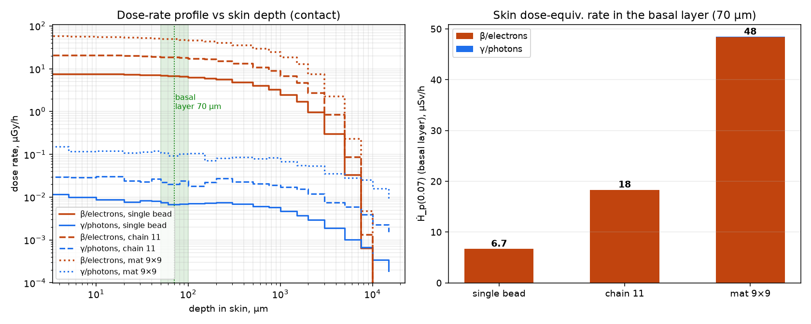
Three-dimensional distribution of the absorbed dose rate (in a tissue-equivalent medium) around the source for the three configurations. As the packing grows, the localized field of a single bead turns into a quasi-uniform near-surface irradiation layer; the photon component is always broader and orders of magnitude weaker than the electron one.
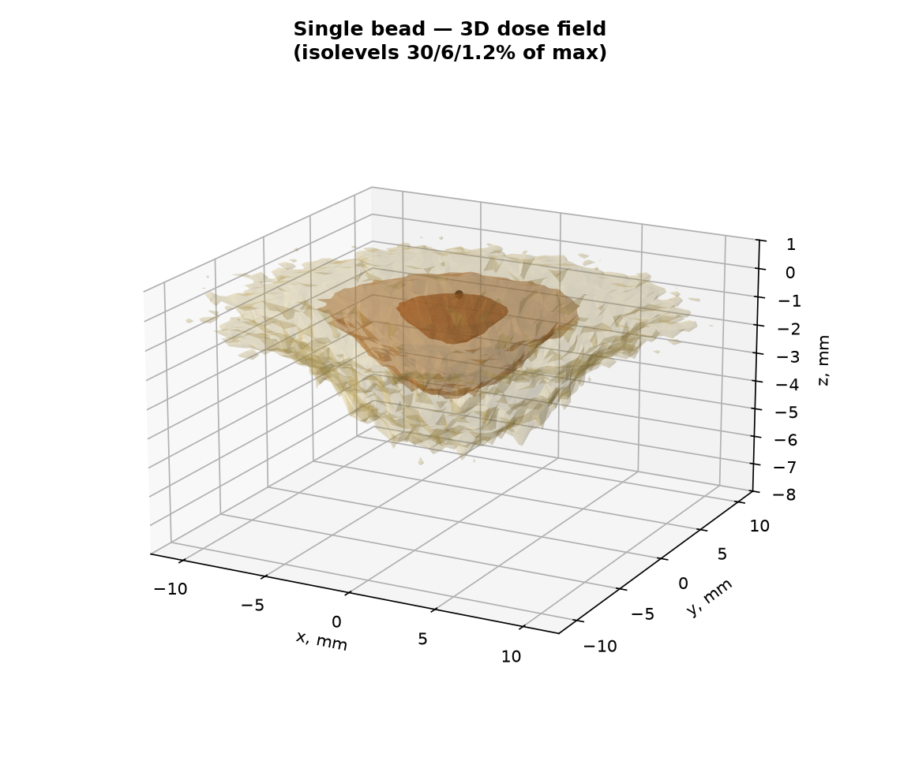
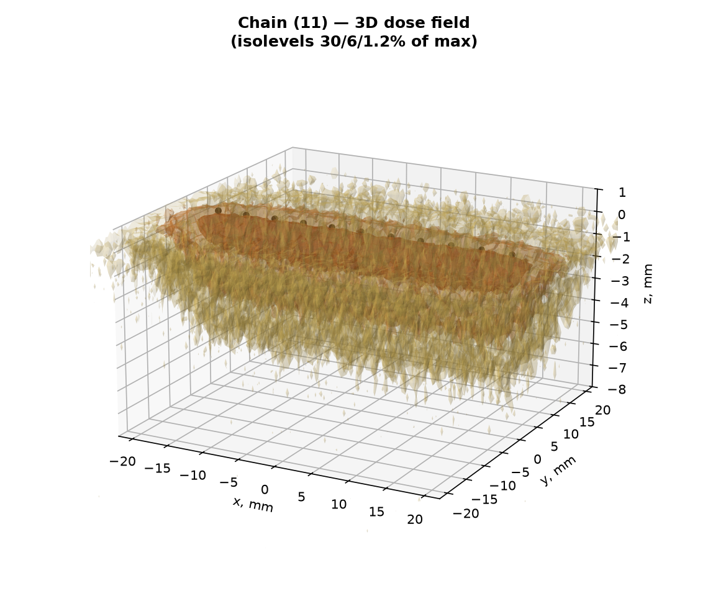
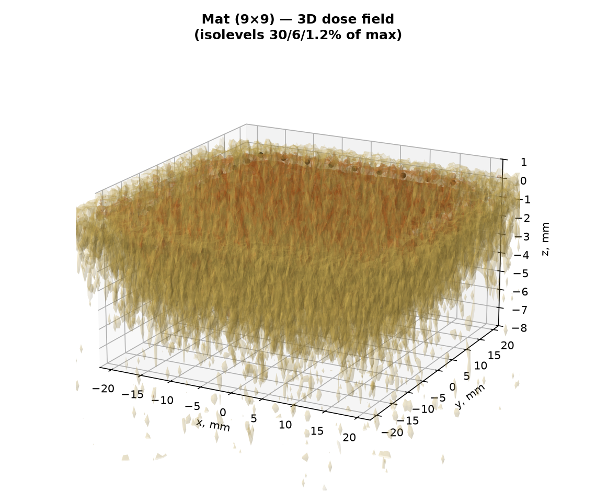
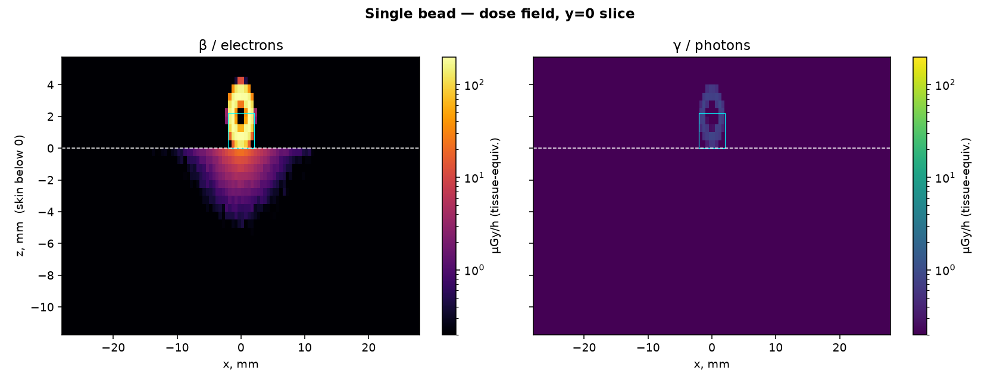
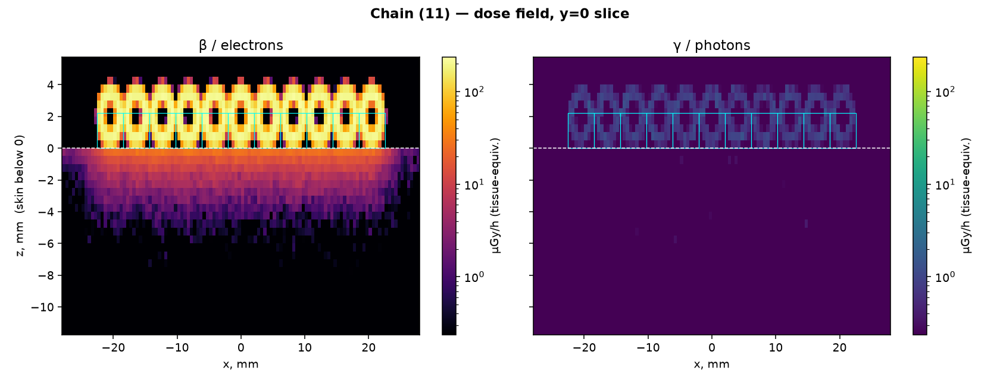
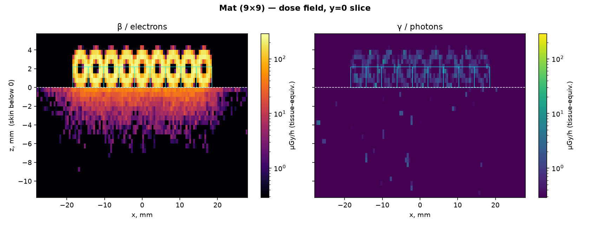
The sphere touches the skin essentially at a point, which raises the question of a possible limit exceedance in a microscopic contact spot. However, the skin-dose limit[6][7] is defined precisely as the dose averaged over a 1 cm² area — deliberately, because it protects against deterministic skin effects (erythema, necrosis) that require irradiation of a finite tissue volume; the same averaging approach is adopted for discrete radioactive particles (NCRP-130, ICRP). No separate, stricter "local" limit for point contact is introduced.
Quantitatively: the basal-layer dose averaged over a disk of ever smaller area under the contact point rises from the regulatory value of 6.7 µSv/h (1 cm²) to 27 µSv/h over 0.01 cm² (Fig. 4). The peak-to-average (1 cm²) ratio is ×4.1. Even this peak local value (tens of µSv/h) is orders of magnitude below the levels at which deterministic skin effects occur: the erythema threshold (~3 Gy) at 27 µGy/h would be reached only after ~10⁵ hours of continuous contact. Thus the local non-uniformity of the field does not lead to a limit exceedance.
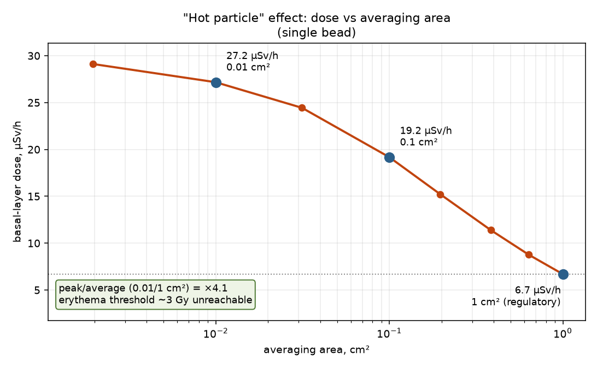
To check both the order of magnitude and the absolute value independently of Geant4, a classical (semi-analytical) estimate was made, "from simple to accurate": first a closed-form formula for the mat that the reader can reproduce by hand (§7.1), then a volume integral over the sphere with two variants of the dose kernel (§7.2).
The dense mat is laterally much larger than the beta range (the extrapolated range of the 234mPa β, Emax = 2.27 MeV, in tissue ≈ 1.1 g/cm² ≈ 11 mm; the 9×9 mat ≈ 37 mm), so it is legitimate to approximate it as an infinite uniform β-active plane of glass. The dose rate at the surface of a semi-infinite uniform source equals half the equilibrium rate in an infinite medium[17] (energy splits equally "up/down"), attenuated to the basal-layer depth:
Ḋp(0.07) = ½ · Σi Cv,i · Ēi · e−νiσ · k
Worked example for the dominant 234mPa (four lines on a calculator):
| Nuclide | Cv, Bq/kg | Ē, MeV | Emax, MeV | ν, cm²/g | νσ | e−νσ | Ḋ∞, µGy/h | ½·Ḋ∞·e−νσ |
|---|---|---|---|---|---|---|---|---|
| 234mPa | 2.27·10⁵ | 0.819 | 2.27 | 5.19 | 0.037 | 0.963 | 107.2 | 51.7 |
| 234Th | 2.27·10⁵ | 0.060 | 0.199 | 202.8 | 1.462 | 0.232 | 7.86 | 0.91 |
| 231Th | 9.90·10³ | 0.163 | 0.389 | 68.7 | 0.496 | 0.609 | 0.93 | 0.28 |
| Sum (hand estimate of the mat) | 52.8 | |||||||
Uncertainty. The result is dominated by 234mPa (the factor e−νσ ≈ 0.96 barely matters). The governing contributions are the specific activity (HPGe, u ≈ 10 %) and the mean β energy (u ≈ 10 %): urel = √(0.10² + 0.10²) ≈ 14 %. Result: Ḋp(0.07) ≈ 53 ± 7 µGy/h.
A single bead is small compared with the beta range, so the semi-infinite approximation does not apply to it. For it (and the intermediate packings) a beta point-dose kernel was used, integrated over the glass volume of the sphere with self-absorption; the chain and mat are obtained by superposition of spheres on a lattice:
Ḋ(r) = a·Ē·ν / (4π I) · Φ(ν·m) / r², I = ∫₀∞ Φ(u) du
where m is the mass along the ray (glass + tissue) and r the distance; a·Ē is the total emitted power, 1/(4πr²) the geometric spreading of an isotropic point source, Φ(ν·m) the dimensionless radial dose fall-off (the dose kernel)[16][18], and the normalization factor ν/(4πI) with I = ∫₀∞Φ(u)du is fixed by energy conservation (∫ Ḋ·ρ·4πr²dr = a·Ē). The dose is evaluated only at target points on the skin (the 1 cm² disk at the basal-layer depth) and summed over all source points in the glass: the 1/(4πr²) factor gives the fraction of each point's isotropic emission that reaches the skin within its solid angle, and Φ(ν·m) attenuates it over the glass path along the ray to the skin. Thus not the "whole emission from the sphere" but only the part reaching the skin is counted (electrons going up or sideways have no target on the skin). Two kernels Φ were considered:
| Configuration | Monte Carlo | exp. kernel | Loevinger kernel |
|---|---|---|---|
| single bead | 6.69 | 6.39 (×0.96) | 5.83 (×0.87) |
| chain (11) | 18.3 | 21.9 (×1.19) | 19.9 (×1.09) |
| mat (9×9) | 48.4 | 74.6 (×1.54) | 68.5 (×1.41) |
For a single bead the exponential kernel agrees with Monte Carlo to 4 % (6.39 vs 6.69 µSv/h) — the fundamental source is reproduced by a fully independent method. The systematic deviations for packings are analysed in §8.
The result can be trusted because it is confirmed by several independent lines; below is their summary, then the analysis of the single systematic discrepancy.
| What is checked (method and source) | Agreement |
|---|---|
| Normalization check (sanity test): the computed fluence of a point isotropic γ source in vacuum is compared with the exact inverse-square law Φ = N/(4πr²) at 10/20/30 cm | computed/analytical ratio = 1.000 — geometry, primary-particle sampling and scoring normalization reproduce the exact solution |
| First-principles self-consistency of the inputs: measured specific activity ↔ uranium mass fraction (via the specific activity of pure 238U, λN) | 2.27·10⁵ Bq/kg → 1.83 wt% U, matching the independently measured 1.84 %; 235U 0.67 % |
| Independent closed-form formula for the dense packing (§7.1; semi-infinite source, Loevinger/Cember[16][17]) | 53 ± 7 µGy/h vs MC 48.4 → +9 % |
| Independent dose-kernel integral over the sphere for a single bead (§7.2; Loevinger kernel[16][18]) | 6.39 vs MC 6.69 µSv/h → 4 % |
| Independent code audit by a separate AI agent (§11): recomputation of doses from raw runs + a Geant4 decay-chain track dump | doses reproduced; a normalization error of the first revision found and fixed |
The single systematic discrepancy is the growth of the "sphere integral / MC" ratio with packing size: the exponential kernel ×0.96 → ×1.19 → ×1.54, the Loevinger kernel ×0.87 → ×1.09 → ×1.41. This is not random scatter but an effect with a clear physical cause:
beads_skin) allows every step to be re-checked. Nevertheless, the reported values remain a model estimate: methodological errors and input-data uncertainties cannot be excluded, so before practical use independent verification by qualified specialists and, where necessary, direct measurement with certified instruments are required (see the disclaimer at the top).The relevant limit is the equivalent-dose limit for skin under Russian radiation safety standards NRB-99/2009[7]; it is defined as the dose Ḣp(0.07) averaged over 1 cm² at the basal-layer depth — exactly the quantity computed here. The general effective-dose limit (1 mSv/year for the public) does not apply directly to localized skin irradiation.
| Scenario | Ḣp(0.07), µSv/h | Hours to 50 mSv/year | Equivalent |
|---|---|---|---|
| single bead | 6.7 | ≈ 7500 | ~20 h every day all year |
| chain (11) | 18.3 | ≈ 2700 | ~7.5 h every day all year |
| dense mat | 48.4 | ≈ 1030 | ~2.8 h every day all year |
Equivalent skin-dose limits: public 50 mSv/year, occupational (category A) 500 mSv/year. Realistic handling regimes:
| Regime | Skin dose per year | Fraction of 50 mSv |
|---|---|---|
| jewelry (dense mat against skin) 2 h/day | ≈ 35 mSv | 71 % — below limit |
| jewelry (mat) 1 h/day | ≈ 18 mSv | 35 % |
| wearing a chain 24 h/day | ≈ 160 mSv | 320 % — above public, below occupational A |
| wearing a mat 24 h/day | ≈ 424 mSv | 848 % — above public, below occupational A (500) |
| single bead, episodic contact | ≪ 1 mSv | negligible |
| pouring/sorting (minutes) | ≪ 0.01 mSv | negligible |
The work was carried out by an "operator + AI agent" pairing (Claude Code interface, Anthropic). Roles:
All reported values are reproducible with the attached code (project beads_skin).
Calculation code and data: Geant4 project beads_skin (main.cc, convolution postproc_beads.py, renderers field_render.py, fig_hotparticle.py). All graphics are in the figures/ folder of this page.
For field monitoring it is convenient to relate the reading of the β-particle flux density φβ (measured with β flux-density instruments, e.g. a BDPB detector unit or an MKS-01SA dose-rate/radiometer) to the skin dose-equivalent rate. For the dense-packing geometry:
Ḣp(0.07) = K · φβ
Flux density — direct Monte Carlo. In the same Geant4 model (§3), for the 9×9 mat the β particles crossing the skin boundary (over the 1 cm² disk) were counted and folded with the measured activities (as for the dose). The 156 keV registration threshold is applied (soft β are cut by the instrument):
| Quantity | β·cm⁻²·s⁻¹ | β·cm⁻²·min⁻¹ |
|---|---|---|
| all β | 17.9 | 1070 |
| β > 156 keV (BDPB threshold) | 16.4 | 983 |
The coefficient. With Ḣp(0.07) of the dense packing = 48.4 µSv/h (Monte Carlo, §4) and φβ(>156 keV) = 16.4 β·cm⁻²·s⁻¹:
K ≈ 3.0 (µSv/h)/(β·cm⁻²·s⁻¹) or K ≈ 0.05 (µSv/h)/(β·cm⁻²·min⁻¹)
Rule of thumb: 1000 β·cm⁻²·min⁻¹ ≈ 50 µSv/h. Uncertainty ~30 % (glass density ±10 %, MC statistics, measurement geometry and backscatter). Note. A simple analytical "net current" estimate J = Cm·nβ/(6ν) = 7.5 β·cm⁻²·s⁻¹ gives half as much: a detector counts all crossings (≈ 2× the net current for a broad angular distribution) plus conversion electrons — hence direct transport, consistent with the measurement, is used.
handcalc_flux.py of the beads_skin project.The calculation was performed by an AI agent (Anthropic Claude) under the guidance and control of the operator. Method — direct Monte Carlo radiation transport (Geant4 11.2.1) with convolution by measured activities. Values are for the conservative direct-contact geometry.
VibeEngineering · 23 Jul 2026 · uranium-bead dosimetry · rev. 5 (problem→solution→verification→analysis structure; quantity Ḣp(0.07); hand classical calculation; UDC index)